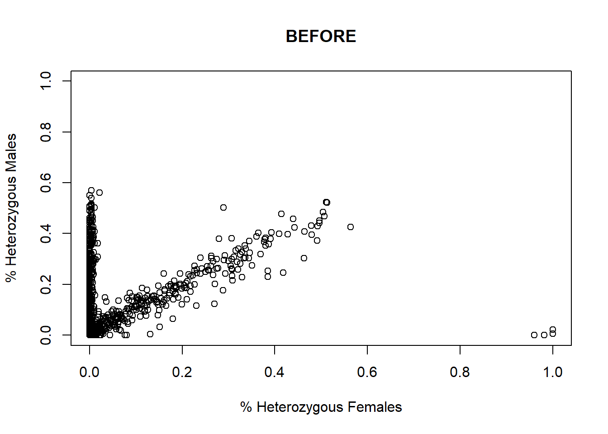
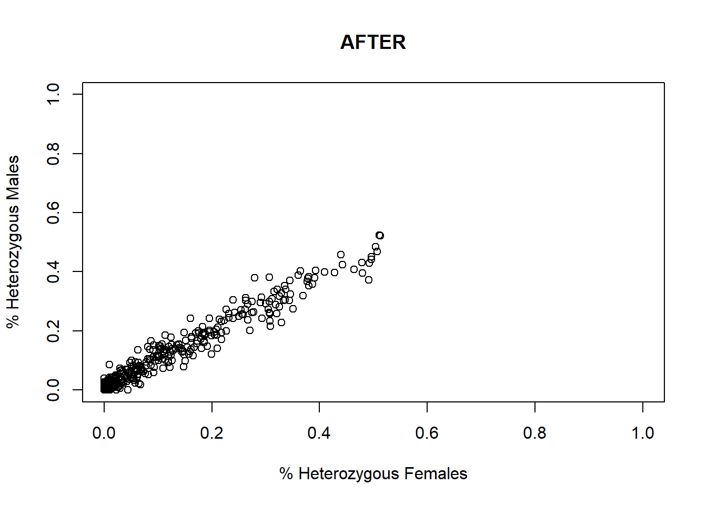

library(dartR.base)
library(dartR.sexlinked)10 Sex Linked Markers
Session leads

Required packages
Dataset 1 - ZW//ZZ - The Yellow Tufted Honeyeater

Load data
data("YTH")
YTH # Explore the dataset
YTH@n.loc # Number of SNPs
length(YTH@ind.names) # Number of individuals ********************
*** DARTR OBJECT ***
********************
** 609 genotypes, 994 SNPs , size: 49.9 Mb
missing data: 139174 (=22.99 %) scored as NA
** Genetic data
@gen: list of 609 SNPbin
@ploidy: ploidy of each individual (range: 2-2)
** Additional data
@ind.names: 609 individual labels
@loc.names: 994 locus labels
@loc.all: 994 allele labels
@position: integer storing positions of the SNPs [within 69 base sequence]
@pop: population of each individual (group size range: 12-516)
@other: a list containing: loc.metrics, ind.metrics, loc.metrics.flags, verbose, history
@other$ind.metrics: id, pop, sex, sex_original, service, plate_location
@other$loc.metrics: AlleleID, CloneID, AlleleSequence, TrimmedSequence, Chrom_Lichenostomus_HeHo_v1, ChromPos_Lichenostomus_HeHo_v1, AlnCnt_Lichenostomus_HeHo_v1, AlnEvalue_Lichenostomus_HeHo_v1, SNP, SnpPosition, CallRate, OneRatioRef, OneRatioSnp, FreqHomRef, FreqHomSnp, FreqHets, PICRef, PICSnp, AvgPIC, AvgCountRef, AvgCountSnp, RepAvg, clone, uid, rdepth, maf
@other$latlon[g]: no coordinates attached[1] 994[1] 609Run filter.sex.linked
This function identifies sex-linked and autosomal loci present in a SNP dataset (i.e., genlight object) using individuals with known sex. It identifies five types of loci: w-linked or y-linked, sex-biased, z-linked or x-linked, gametologous and autosomal.
The genlight object must contain in gl@other$ind.metrics a column named “id”, and a column named “sex” in which individuals with known-sex are assigned ‘M’ for male, or ‘F’ for female. The function ignores individuals that are assigned anything else or nothing at all (unknown-sex).

Tip
NOTE
Set ncores to more than 1 (default) if you have more than 50,000 SNPs, since it could actually slow down the analysis with smaller datasets.
head(YTH@other$ind.metrics) # Check that ind.metrics has the necessary columns| id | pop | sex | sex_original | service | plate_location | |
|---|---|---|---|---|---|---|
| ANWC46839 | ANWC46839 | Melanops | F | F | DLich17-2918 | 1-A1 |
| W49 | W49 | Cassidix | F | F | DLich17-2918 | 1-A10 |
| W90 | W90 | Cassidix | F | F | DLich17-2918 | 1-A12 |
| C25 | C25 | Cassidix | M | M | DLich17-2918 | 1-A2 |
| C8 | C8 | Cassidix | M | M | DLich17-2918 | 1-A3 |
| W70 | W70 | Cassidix | F | F | DLich17-2918 | 1-A4 |
res <- dartR.sexlinked::filter.sex.linked(gl = YTH, system = "zw")Detected 276 females and 333 males.Starting phase 1. May take a while...Building call rate plots.Done. Starting phase 2.Building heterozygosity plots.
Done building heterozygosity plots.**FINISHED** Total of analyzed loci: 994.
Found 506 sex-linked loci:
52 W-linked loci
273 sex-biased loci
165 Z-linked loci
16 ZW gametologs.
And 488 autosomal loci.
Exercise

How many males and females does the dataset contain?
How many sex-linked loci were found?
Now check the output:
res$w.linked # Notice that it says 'w-linked'
res$z.linked # Notice that it says 'z-linked'
res$gametolog
res$sex.biased
res$autosomal
knitr::kable(head(res$results.table)) # The output table ********************
*** DARTR OBJECT ***
********************
** 609 genotypes, 52 SNPs , size: 48.9 Mb
missing data: 17304 (=54.64 %) scored as NA
** Genetic data
@gen: list of 609 SNPbin
@ploidy: ploidy of each individual (range: 2-2)
** Additional data
@ind.names: 609 individual labels
@loc.names: 52 locus labels
@loc.all: 52 allele labels
@position: integer storing positions of the SNPs [within 69 base sequence]
@pop: population of each individual (group size range: 12-516)
@other: a list containing: loc.metrics, ind.metrics, loc.metrics.flags, verbose, history
@other$ind.metrics: id, pop, sex, sex_original, service, plate_location
@other$loc.metrics: AlleleID, CloneID, AlleleSequence, TrimmedSequence, Chrom_Lichenostomus_HeHo_v1, ChromPos_Lichenostomus_HeHo_v1, AlnCnt_Lichenostomus_HeHo_v1, AlnEvalue_Lichenostomus_HeHo_v1, SNP, SnpPosition, CallRate, OneRatioRef, OneRatioSnp, FreqHomRef, FreqHomSnp, FreqHets, PICRef, PICSnp, AvgPIC, AvgCountRef, AvgCountSnp, RepAvg, clone, uid, rdepth, maf
@other$latlon[g]: no coordinates attachedThe output consists of a genlight object for each type of loci, plus a results table.
Run infer.sex
This function uses the complete output of function filter.sex.linked (list of 6 objects) to infer the sex of all individuals in the dataset. Specifically, the function uses 3 types of sex-linked loci (W-/Y-linked, Z-/X-linked, and gametologs), assigns a preliminary genetic sex for each type of sex-linked loci available, and outputs an agreed sex.
sexID <- dartR.sexlinked::infer.sex(gl_sex_filtered = res, system = "zw",
seed = 124)***FINISHED***knitr::kable(head(sexID))| id | w.linked.sex | #missing | #called | z.linked.sex | #Hom.z | #Het.z | gametolog.sex | #Hom.g | #Het.g | agreed.sex | |
|---|---|---|---|---|---|---|---|---|---|---|---|
| ANWC46839 | ANWC46839 | F | 51 | 1 | F | 1 | 141 | F | 5 | 0 | F |
| W49 | W49 | F | 52 | 0 | F | 2 | 156 | F | 5 | 0 | F |
| W90 | W90 | F | 48 | 4 | F | 0 | 162 | F | 5 | 0 | F |
| C25 | C25 | M | 0 | 52 | M | 52 | 113 | M | 0 | 5 | M |
| C8 | C8 | M | 0 | 52 | M | 48 | 116 | M | 0 | 5 | M |
| W70 | W70 | F | 49 | 3 | F | 0 | 152 | F | 5 | 0 | F |
Warning
IMPORTANT We created this function with the explicit intent that a human checks the evidence for the agreed sex that do NOT agree for all types of sex-linked loci (denoted as ‘*M’ or ‘*F’). This human can then use their criterion to validate these assignments.
Exercise

Can you find individuals for which the agreed sex is uncertain (i.e., has an asterisk “*”)?
EXERCISE
Exercise

Imagine you are analyzing the genetic data of a population and you want to look at its genetic structure and genetic diversity. You get to work by filtering your beautiful set of SNPs. Because you are a rigorous, you want to test whether using function filter.sex.linked to properly filter out sex-linked loci changes the results of the populations analyses. So you: (1) process your SNP dataset by applying standard filters and run analyses, and (2) process the dataset by filtering out sex-linked loci first, applying standard filters second, and then run analyses.
Choose one of the following datasets (or your own data) and report:
How many sex-linked markers are present?
How many individuals had a wrong sexID?
Do you see any changes in your PCA/structure analyses when you filtered out sex-linked markers versus when you did not?
Do you see any differences in genetic diversity and fixation indices when you filtered out sex-linked markers versus when you did not?


Exercise data 1 - Your own data
HINT
You can have a look at the exercise data below for inspiration.
1. Number of sex-linked markers?
2. Individuals with wrong sexID?
3. Changes in PCA before and after removing the SLM?
4. Differences in genetic diversity and fixation indices between autosomal and SLM?
Exercise data 2 - The Eastern Yellow Robin
Data from Robledo-Ruiz et al. (2023)
Further Readings
Devloo-Delva, F., Burridge, C. P., Kyne, P. M., Brunnschweiler, J. M., Chapman, D. D., Charvet, P., … & Feutry, P. (2023). From rivers to ocean basins: The role of ocean barriers and philopatry in the genetic structuring of a cosmopolitan coastal predator. Ecology and Evolution, 13(2), e9837. https://doi.org/10.1002/ece3.9837
Nikolic, N., Devloo-Delva, F., Bailleul, D., Noskova, E., Rougeux, C., Delord, C., … & Arnaud‐Haond, S. (2023). Stepping up to genome scan allows stock differentiation in the worldwide distributed blue shark Prionace glauca. Molecular Ecology, 32(5), 1000-1019. https://doi.org/10.1111/mec.16822
Robledo-Ruiz, D. A., Austin, L., Amos, J. N., Castrejón-Figueroa, J., Harley, D. K. P., Magrath, M. J. L., Sunnucks, P., & Pavlova, A. (2023). Easy-to-use R functions to separate reduced-representation genomic datasets into sex-linked and autosomal loci, and conduct sex assignment. Molecular Ecology Resources, 00, 1–21. https://doi.org/10.1111/1755-0998.13844